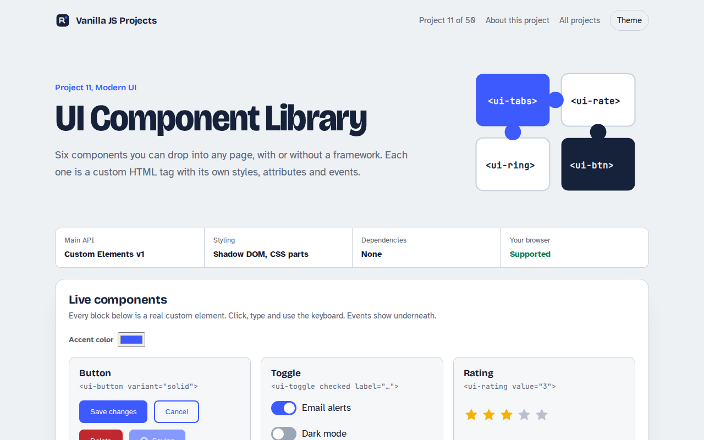
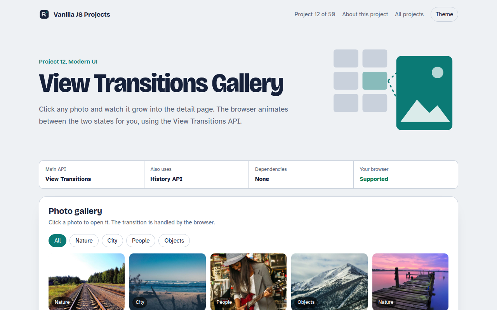
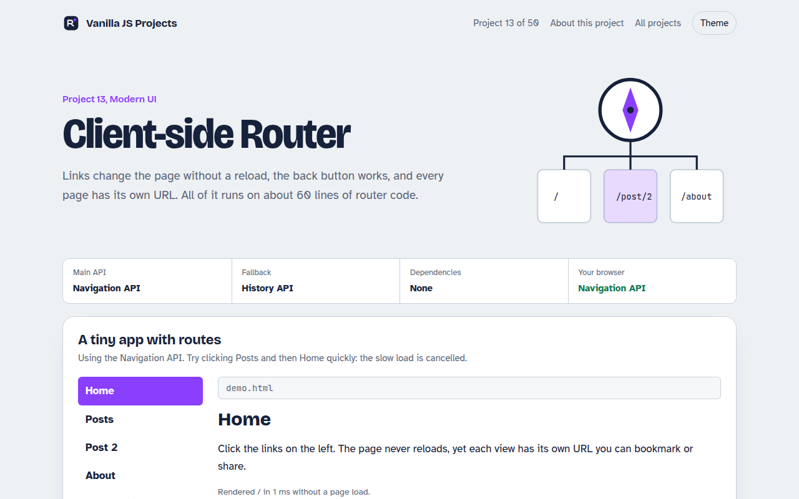
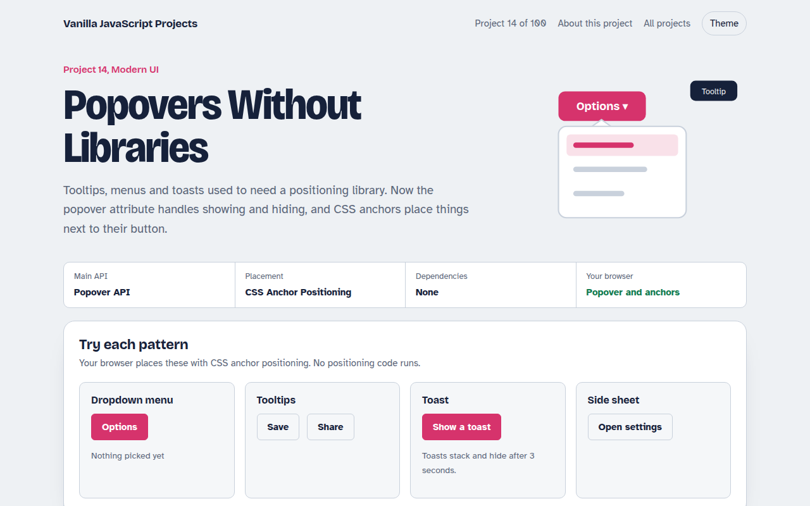
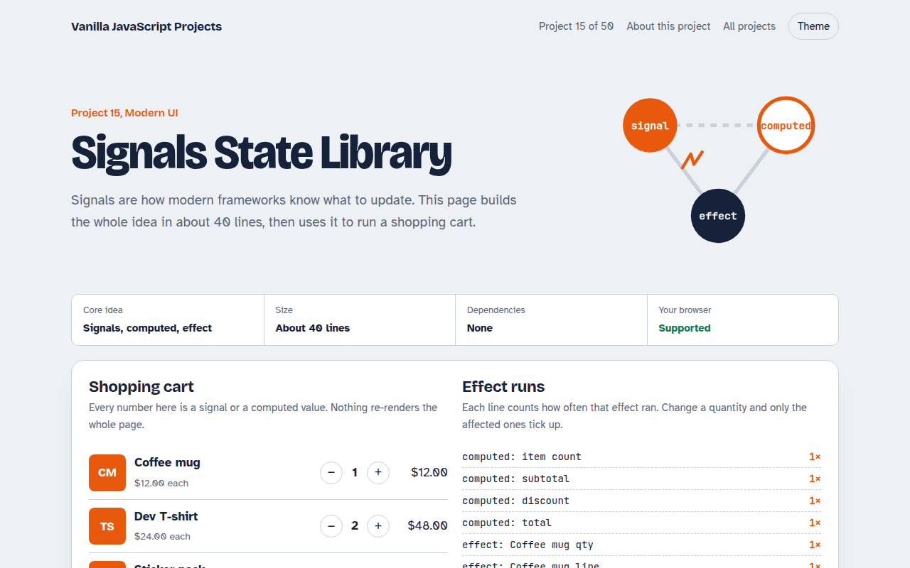
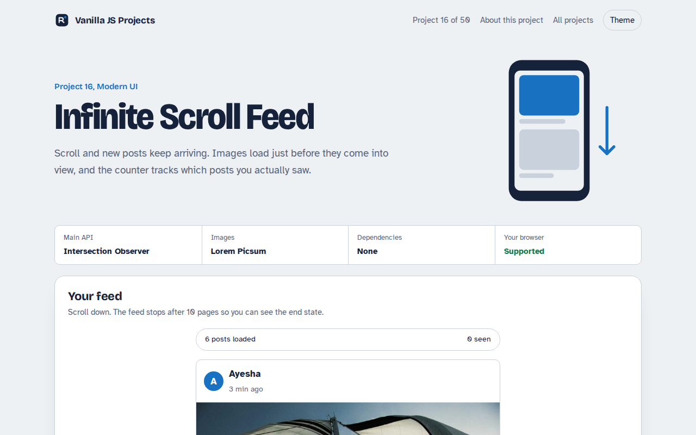
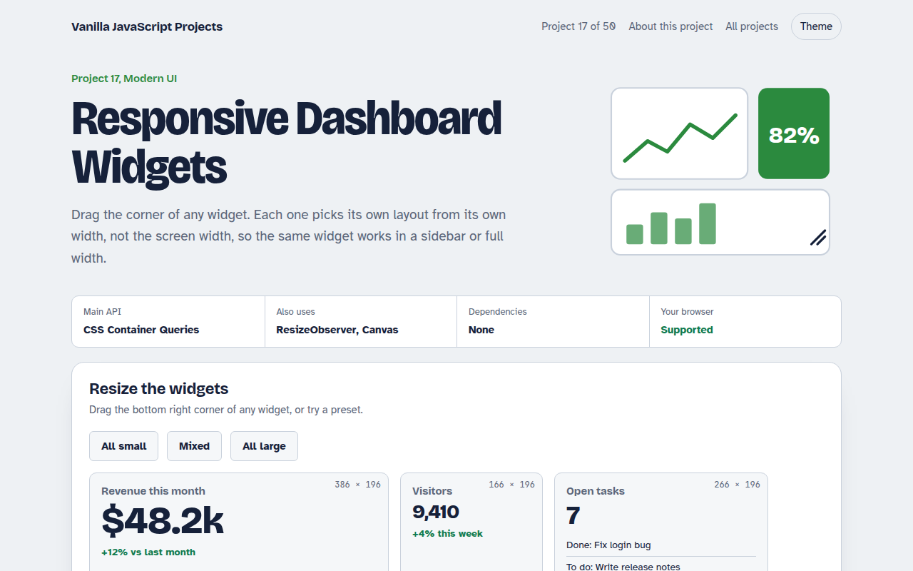
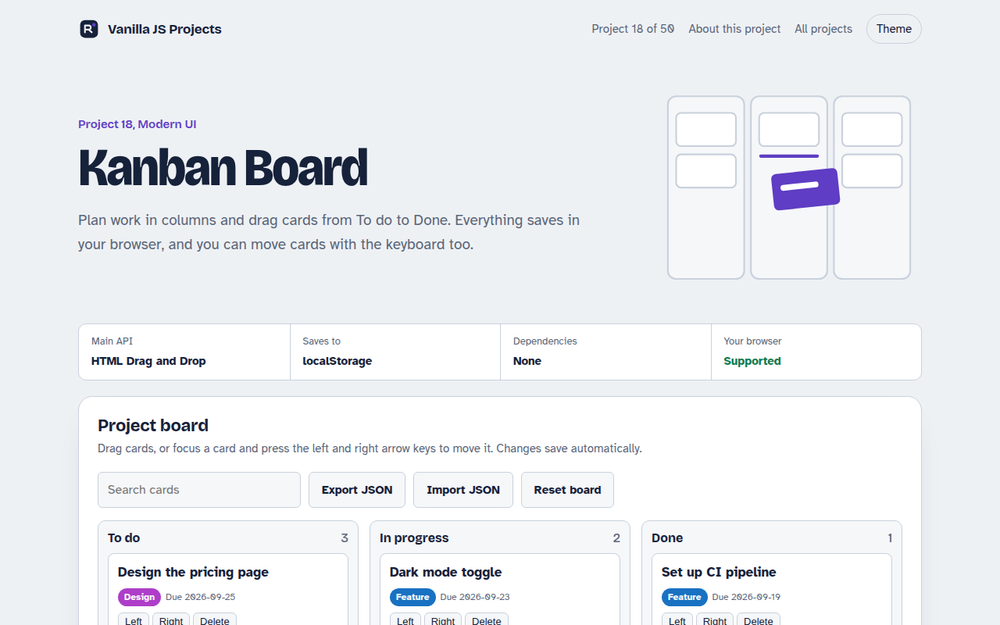
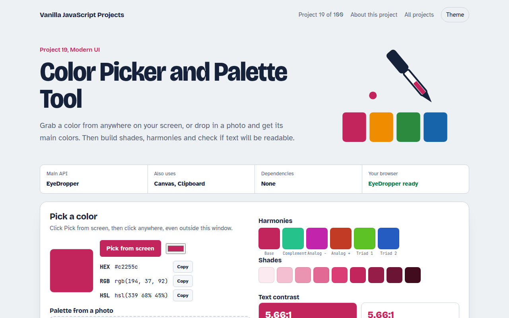
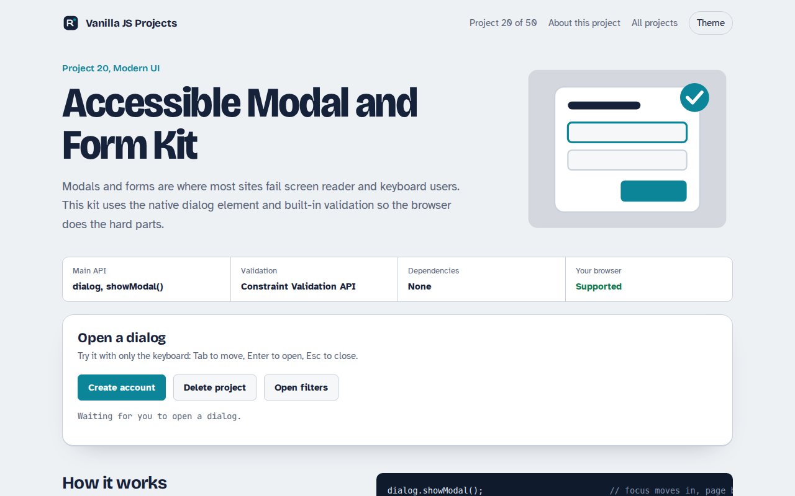

Home / Modern UI
Modern UI JavaScript Projects
The browser now does many things that used to need React or a big library. Custom components, animated page changes, routing, tooltips that place themselves, and state that updates the screen on its own. These ten projects show those features in real, useful interfaces. Each one is a single HTML file you can open, read and copy into your own work.

011. UI Component Library
Six reusable Web Components you can drop into any page
012. View Transitions Gallery
A photo gallery where images grow smoothly into the detail page
013. Client-side Router
A tiny single page app router with real URLs
014. Popovers Without Libraries
Tooltips, menus, toasts and a side sheet with no library
015. Signals State Library
A 40 line reactive state library running a shopping cart
016. Infinite Scroll Feed
A photo feed that loads more posts as you scroll
017. Responsive Dashboard Widgets
Dashboard widgets that change layout when you resize them
018. Kanban Board
A Trello style task board with drag and drop
019. Color Picker and Palette Tool
A color picker that pulls palettes from photos and checks contrast